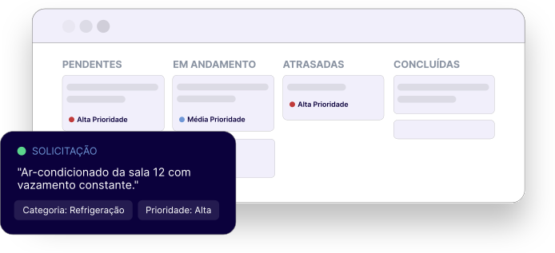

O Fixa centraliza solicitações,
automatiza
a triagem e oferece visibilidade completa
para equipes de manutenção e gestores escolares.

O PROBLEMA
Sem um fluxo estruturado, instituições enfrentam perdas de tempo,
custos desnecessários e, em situações críticas, riscos à segurança das pessoas.
Decisões sobre o que consertar
primeiro dependem de achismo,
mesmo quando o problema pode
gerar inatividade de aulas.
Solicitações em papel, planilhas
soltas ou grupos de mensagem,
sem histórico centralizado por
equipamento.
O gestor não enxerga o status
real das ordens de serviço nem o
desempenho da equipe técnica
em tempo real.
Checklists obrigatórios de inspeção,
como o PMOC do ar-condicionado,
sem controle nem exportação para
auditoria.
ANTES X DEPOIS
ANTES
COM O FIXA
FUNCIONALIDADES
Um único sistema para registrar, classificar, priorizar, executar e acompanhar.
Visualize todas, pendentes, em andamento, atrasadas e concluídas.
Categorização automática de cada solicitação assim que é aberta.
Manual ou automática, considerando urgência e impacto na instituição.
Por categoria da demanda, experiência, disponibilidade e turno.
Modelos de inspeção para ar-condicionado e outros equipamentos.
Individual para o técnico, consolidado para o gestor.
Eventos, horários e localidades planejados em um só lugar.
Comunicação e atualizações em tempo real para o solicitante.
PARA QUEM É
Professores, inspetores e demais colaboradores
que identificam um problema na instituição.
Abre e acompanha solicitações
Fala com o chatbot Manu
Recebe atualizações em tempo real
Responsável por executar e registrar a resolução
das ordens de serviço atribuídas.
Gerencia seu Kanban pessoal
Preenche checklists PMOC
Acessa dashboard individual
Supervisiona equipe, equipamentos e a operação
completa da instituição.
Cadastra técnicos e equipamentos
Acompanha dashboard consolidado
Planeja calendário de manutenção
PLANOS
FAQ